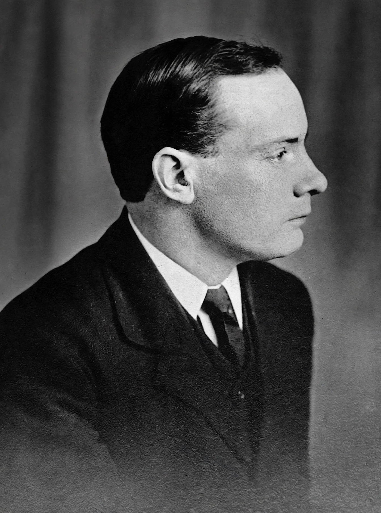

Patrick Henry Pearse (Irish: Pádraig Anraí Mac Piarais; 10 November 1879 – 3 May 1916) was an Irish teacher, barrister, poet, writer, nationalist and political activist who led the Easter Rising of 1916. He was executed by British authorities and is remembered as a central figure of Irish republicanism and the Gaelic revival.

| Born | 10 November 1879, Dublin |
|---|---|
| Died | 3 May 1916, Kilmainham Gaol |
| Known for | Easter Rising, Irish language activism |
Pearse joined the Gaelic League at 16, edited its paper An Claidheamh Soluis, and founded St Enda's School (Scoil Éanna) in 1908, a bilingual school promoting Irish culture. He wrote stories and poems in Irish and English, including "Mise Éire".
A member of the Irish Republican Brotherhood and a founder of the Irish Volunteers, Pearse read the Proclamation of the Irish Republic outside the GPO on 24 April 1916 as president of the provisional government. After surrender he was court-martialled and shot. See also Saint Patrick.